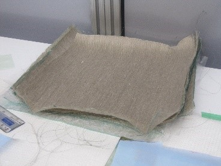
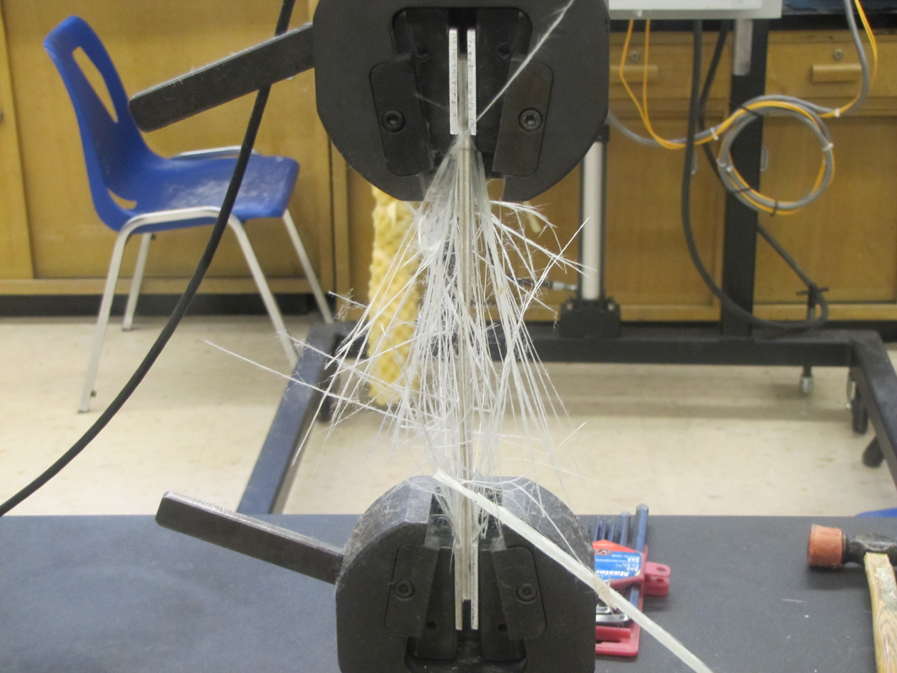

This project set out to design, manufacture, and test a composite femur bone plate as a valid substitute for current metallic fracture plates. The goal was to improve bone healing, preventing a process called "stress shielding". Stress shielding occurs when the majority of a load is transferred to the plate, resulting in a reduction in bone density once the plate is removed. This issue requires the composite plate to mimic the mechanical properties of bone to prevent this from occuring.
Our composite plate would be a combination of flax, glass fibers, and epoxy resin, stacked in a sequence (configuration) that would provide the desired results. Through a 4 month period, the team had been able to computationally obtain the optimal configuration using Matlab, simulate that configuration using SolidWorks & ANSYS, and manufacture a prototype to conduct mechanical testing, which had produced near identical results as our simulation.
The figures below illustrate the manufacturing process of a prototype that the team would conduct mechanical testing on.
Mechanical Tests were then conducted for each specimen cut to determine mechanical properties. The results obtained from the tensile tests were consistent, providing confidence to the team on accurate results. Bending Tests also gave very consistent results. These results are in line with our theoretical calculations. The following images display the specimens after failure.
Our optimal configuration had produced the most comparable stress difference between bone and plate, as well as reducing the deformation of both. This means that the effects of stress shielding would be minimized, with minimal risks of mechanical failure. Once again this result corresponds with both our theoretical calculations as well as our specimen testing. Below are the simulated CAD results of both the Femur and Bone Plate under normal stress values.